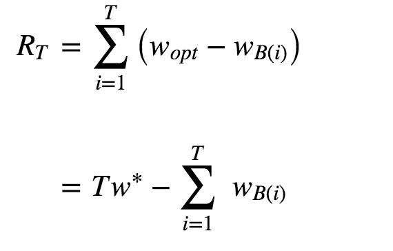
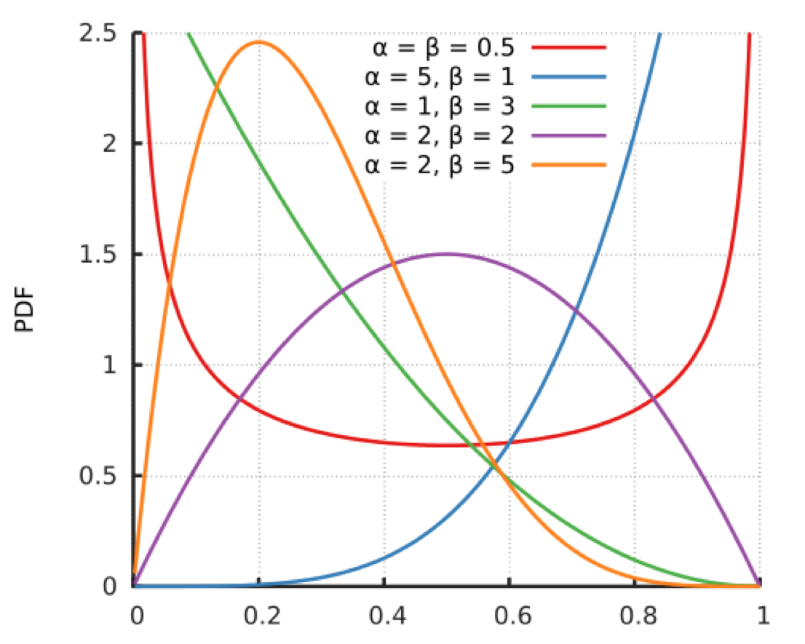
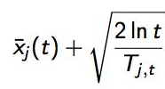
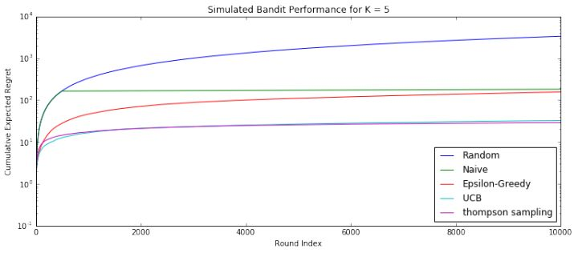

- 00 开篇词 用知识去对抗技术不平等.md.html
- 01 你真的需要个性化推荐系统吗_.md.html
- 02 个性化推荐系统有哪些绕不开的经典问题？.md.html
- 03 这些你必须应该具备的思维模式.md.html
- 04 画鬼容易画人难：用户画像的“能”和“不能”.md.html
- 05 从文本到用户画像有多远.md.html
- 06 超越标签的内容推荐系统.md.html
- 07 人以群分，你是什么人就看到什么世界.md.html
- 08 解密“看了又看”和“买了又买”.md.html
- 09 协同过滤中的相似度计算方法有哪些.md.html
- 10 那些在Netflix Prize中大放异彩的推荐算法.md.html
- 11 Facebook是怎么为十亿人互相推荐好友的.md.html
- 12 如果关注排序效果，那么这个模型可以帮到你.md.html
- 13 经典模型融合办法：线性模型和树模型的组合拳.md.html
- 14 一网打尽协同过滤、矩阵分解和线性模型.md.html
- 15 深度和宽度兼具的融合模型 Wide and Deep.md.html
- 16 简单却有效的Bandit算法.md.html
- 17 结合上下文信息的Bandit算法.md.html
- 18 如何将Bandit算法与协同过滤结合使用.md.html
- 19 深度学习在推荐系统中的应用有哪些_.md.html
- 20 用RNN构建个性化音乐播单.md.html
- 21 构建一个科学的排行榜体系.md.html
- 22 实用的加权采样算法.md.html
- 23 推荐候选池的去重策略.md.html
- 24 典型的信息流架构是什么样的.md.html
- 25 Netflix个性化推荐架构.md.html
- 26 总览推荐架构和搜索、广告的关系.md.html
- 27 巧妇难为无米之炊：数据采集关键要素.md.html
- 28 让你的推荐系统反应更快：实时推荐.md.html
- 29 让数据驱动落地，你需要一个实验平台.md.html
- 30 推荐系统服务化、存储选型及API设计.md.html
- 31 推荐系统的测试方法及常用指标介绍.md.html
- 32 道高一尺魔高一丈：推荐系统的攻防.md.html
- 33 和推荐系统有关的开源工具及框架介绍.md.html
- 34 推荐系统在互联网产品商业链条中的地位.md.html
- 35 说说信息流的前世今生.md.html
- 36 组建推荐团队及工程师的学习路径.md.html
- 加餐 推荐系统的参考阅读.md.html
- 结束语 遇“荐”之后，江湖再见.md.html
- 捐赠
16 简单却有效的Bandit算法
我在之前的文章中表达过，推荐系统的使命就是在建立用户和物品之间的连接。建立连接可以理解成：为用户匹配到最佳的物品；但也有另一个理解就是，在某个时间某个位置为用户选择最好的物品。
推荐就是选择
生活中，你我都会遇到很多要做选择的场景。上哪个大学，学什么专业，去哪家公司，中午吃什么等等。这些事情，都让选择困难症的我们头很大。头大在哪呢？主要是不知道每个选择会带来什么后果。
你仔细想一下，生活中为什么会害怕选择，究其原因是把每个选项看成独一无二的个体，一旦错过就不再来。推荐系统中一个一个单独的物品也如此，一旦选择呈现给用户，如果不能得到用户的青睐，就失去了一个展示机会。如果跳出来看这个问题，选择时不再聚焦到具体每个选项，而是去选择类别，这样压力是不是就小了很多？
比如说，把推荐选择具体物品，上升到选择策略。如果后台算法中有三种策略：按照内容相似推荐，按照相似好友推荐，按照热门推荐。每次选择一种策略，确定了策略后，再选择策略中的物品，这样两个步骤。
那么，是不是有办法来解决这个问题呢？当然有！那就是Bandit算法。
MAB问题
Bandit算法来源于人民群众喜闻乐见的赌博学，它要解决的问题是这样的。
一个赌徒，要去摇老虎机，走进赌场一看，一排老虎机，外表一模一样，但是每个老虎机吐钱的概率可不一样，他不知道每个老虎机吐钱的概率分布是什么，那么想最大化收益该怎么整？
这就是多臂赌博机问题(Multi-armed bandit problem, K-armed bandit problem, MAB)，简称MAB问题。有很多相似问题都属于MAB问题。
- 假设一个用户对不同类别的内容感兴趣程度不同，当推荐系统初次见到这个用户时，怎么快速地知道他对每类内容的感兴趣程度？这也是推荐系统常常面对的冷启动问题。
- 假设系统中有若干广告库存物料，该给每个用户展示哪个广告，才能获得最大的点击收益，是不是每次都挑收益最好那个呢？
- 算法工程师又设计出了新的策略或者模型，如何既能知道它和旧模型相比谁更靠谱又对风险可控呢？
这些问题全都是关于选择的问题。只要是关于选择的问题，都可以简化成一个MAB问题。
我在前面的专栏中提过，推荐系统里面有两个顽疾，一个是冷启动，一个是探索利用问题，后者又称为EE问题：Exploit－Explore问题。针对这两个顽疾，Bandit算法可以入药。
冷启动问题好说，探索利用问题什么意思？
利用意思就是：比较确定的兴趣，当然要用啊。好比说我们已经挣到的钱，当然要花啊。
探索的意思就是：不断探索用户新的兴趣才行，不然很快就会出现一模一样的反复推荐。就好比我们虽然有一点钱可以花了，但是还得继续搬砖挣钱啊，要不然，花完了就要喝西北风了。
Bandit算法
Bandit算法并不是指一个算法，而是一类算法。现在就来介绍一下Bandit算法家族怎么解决这类选择问题的。
首先，来定义一下，如何衡量选择的好坏？Bandit算法的思想是：看看选择会带来多少遗憾，遗憾越少越好。在MAB问题里，用来量化选择好坏的指标就是累计遗憾，计算公式如图所示。

简单描述一下这个公式。公式有两部分构成：一个是遗憾，一个是累积。求和符号内部就表示每次选择的遗憾多少。
Wopt就表示，每次都运气好，选择了最好的选择，该得到多少收益，WBi就表示每一次实际选择得到的收益，两者之差就是“遗憾”的量化，在T次选择后，就有了累积遗憾。
在这个公式中：为了简化MAB问题，每个臂的收益不是0，就是1，也就是伯努利收益。
这个公式可以用来对比不同Bandit算法的效果：对同样的多臂问题，用不同的Bandit算法模拟试验相同次数，比比看哪个Bandit算法的累积遗憾增长得慢，那就是效果较好的算法。
Bandit算法的套路就是：小心翼翼地试，越确定某个选择好，就多选择它，越确定某个选择差，就越来越少选择它。
如果某个选择实验次数较少，导致不确定好坏，那么就多给一些被选择机会，直到确定了它是金子还是石头。简单说就是，把选择的机会给“确定好的”和“还不确定的”。
Bandit算法中有几个关键元素：臂，回报，环境。
- 臂：是每次选择的候选项，好比就是老虎机，有几个选项就有几个臂；
- 回报：就是选择一个臂之后得到的奖励，好比选择一个老虎机之后吐出来的金币；
- 环境：就是决定每个臂不同的那些因素，统称为环境。
将这个几个关键元素对应到推荐系统中来。
- 臂：每次推荐要选择候选池，可能是具体物品，也可能是推荐策略，也可能是物品类别；
- 回报：用户是否对推荐结果喜欢，喜欢了就是正面的回报，没有买账就是负面回报或者零回报；
- 环境：推荐系统面临的这个用户就是不可捉摸的环境。
下面直接开始陈列出最常用的几个Bandit算法。
1.汤普森采样算法
第一个是汤普森采样算法。这个算法我个人很喜欢它，因为它只要一行代码就可以实现，并且数学的基础最简单。
简单介绍一下它的原理：假设每个臂是否产生收益，起决定作用的是背后有一个概率分布，产生收益的概率为p。
每个臂背后绑定了一个概率分布；每次做选择时，让每个臂的概率分布各自独立产生一个随机数，按照这个随机数排序，输出产生最大随机数那个臂对应的物品。听上去很简单，为什么这个随机数这么神奇？
关键在于每个臂背后的概率分布，是一个贝塔分布，先看看贝塔分布的样子：

贝塔分布有a和b两个参数。这两个参数决定了分布的形状和位置：
- 当a+b值越大，分布曲线就越窄，分布就越集中，这样的结果就是产生的随机数会容易靠近中心位置；
- 当a/(a+b)的值越大，分布的中心位置越靠近1，反之就越靠近0，这样产生的随机数也相应第更容易靠近1或者0。
贝塔分布的这两个特点，可以把它分成三种情况：
- 曲线很窄，而且靠近1；
- 曲线很窄，而且靠近0；
- 曲线很宽。
这和前面所讲的选择有什么关系呢？你把贝塔分布的a参数看成是推荐后得到用户点击的次数，把分布的b参数看成是没有得到用户点击的次数。按照这个对应，再来叙述一下汤普森采样的过程。
- 取出每一个候选对应的参数a和b；
- 为每个候选用a和b作为参数，用贝塔分布产生一个随机数；
- 按照随机数排序，输出最大值对应的候选；
- 观察用户反馈，如果用户点击则将对应候选的a加1，否则b加1；
注意，实际上在推荐系统中，要为每一个用户都保存一套参数，比如候选有m个，用户有n个，那么就要保存2 * m * n 个参数。
汤普森采样为什么有效呢？解释一下。
- 如果一个候选被选中的次数很多，也就是a+b很大了，它的分布会很窄，换句话说这个候选的收益已经非常确定了，用它产生随机数，基本上就在中心位置附近，接近平均收益。
- 如果一个候选不但a+b很大，即分布很窄，而且a/(a+b)也很大，接近1，那就确定这是个好的候选项，平均收益很好，每次选择很占优势，就进入利用阶段，反之则几乎再无出头之日。
- 如果一个候选的a+b很小，分布很宽，也就是没有被选择太多次，说明这个候选是好是坏还不太确定，那么用它产生随机数就有可能得到一个较大的随机数，在排序时被优先输出，这就起到了前面说的探索作用。
用Python实现汤普森采样就一行：
choice = numpy.argmax(pymc.rbeta(1 + self.wins, 1 + self.trials - self.wins))
2.UCB算法
第二个常用的Bandit算法就是UCB算法，UCB算法全称是Upper Confidence Bound，即置信区间上界。它也为每个臂评分，每次选择评分最高的候选臂输出，每次输出后观察用户反馈，回来更新候选臂的参数。
每个臂的评分公式为.- 
公式有两部分，加号前面是这个候选臂到目前的平均收益，反应了它的效果，后面的叫做Bonus，本质上是均值的标准差，反应了候选臂效果的不确定性，就是置信区间的上边界。t是目前的总选择次数，Tjt是每个臂被选择次数。
观察这个公式，如果一个候选的被选择次数很少，即Tjt很小，那么它的Bonus就会较大，在最后排序输出时有优势，这个Bonus反映了一个候选的收益置信区间宽度，Bonus越大，候选的平均收益置信区间越宽，越不确定，越需要更多的选择机会。
反之如果平均收益很大，就是说加号左边很大，也会在被选择时有优势。
这个评分公式也和汤普森采样是一样的思想：
- 以每个候选的平均收益为基准线进行选择；
- 对于被选择次数不足的给予照顾；
- 选择倾向的是那些确定收益较好的候选。
3. Epsilon贪婪算法
这是一个朴素的算法，也很简单有效，思想有点类似模拟退火，做法如下。
先选一个(0,1)之间较小的数，叫做Epsilon，也是这个算法名字来历。
每次以概率Epsilon做一件事：所有候选臂中随机选一个，以1-Epsilon的概率去选择平均收益最大的那个臂。
是不是简单粗暴？Epsilon的值可以控制对探索和利用的权衡程度。这个值越接近0，在探索上就越保守。
和这种做法相似，还有一个更朴素的做法：先试几次，等每个臂都统计到收益之后，就一直选均值最大那个臂。
4.效果对比
以上几个算法，可以简单用模拟试验的方式对比其效果，如图所示。

横坐标是模拟次数增加，可以看成随着时间推移，纵坐标就是累积遗憾，越高说明搞砸的次数越多。在模拟后期，基本上各种算法优劣一目了然。从上到下分别是下面几种。
- 完全随机：就是不顾用户反馈的做法。
- 朴素选择：就是认准一个效果好的，一直推。
- Epsilon贪婪算法：每次以小概率尝试新的，大概率选择效果好的。
- UCB：每次都会给予机会较少的候选一些倾向。
- 汤普森采样：用贝塔分布管理每一个候选的效果。
UCB算法和汤普森采样都显著优秀很多。
冷启动
我想，你已经想到了，推荐系统冷启动问题可以用Bandit算法来解决一部分。
大致思路如下：
用分类或者Topic来表示每个用户兴趣，我们可以通过几次试验，来刻画出新用户心目中对每个Topic的感兴趣概率。
这里，如果用户对某个Topic感兴趣，就表示我们得到了收益，如果推给了它不感兴趣的Topic，推荐系统就表示很遗憾(regret)了。
当一个新用户来了，针对这个用户，我们用汤普森采样为每一个Topic采样一个随机数，排序后，输出采样值Top N 的推荐Item。注意，这里一次选择了Top N个候选臂。
等着获取用户的反馈，没有反馈则更新对应Topic的b值，点击了则更新对应Topic的a值。
总结
今天给你介绍了一种走一步看一步的推荐算法，叫做Bandit算法。Bandit算法把每个用户看成一个多变的环境，待推荐的物品就如同赌场里老虎机的摇臂，如果推荐了符合用户心目中喜欢的，就好比是从一台老虎机中摇出了金币一样。
今天重点介绍的Bandit算法有汤普森采样，UCB算法，Epsilon贪婪，并且用模拟的方式对比了它们的效果，汤普森采样以实现简单和效果显著而被人民群众爱戴，你需要时不妨首先试试它。
同时，这里留下一个问题给你，今天讲到的Bandit算法有哪些不足？欢迎留言和我一起讨论。

© 2019 - 2023 Liangliang Lee. Powered by gin and hexo-theme-book.